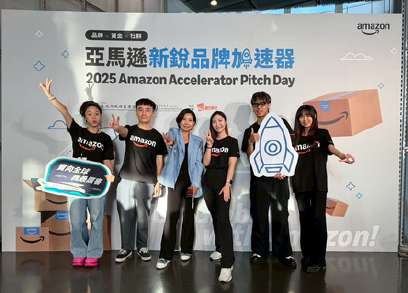
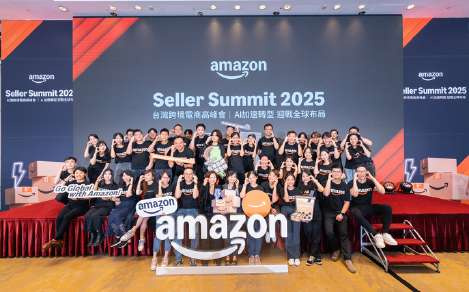

案例 01 — 專案管理 × 活動執行
亞馬遜跨境電商人才培育計畫說明會
挑戰
亞馬遜想在台灣校園找到跨境電商人才，但學生對「跨境電商」的想像多半停在代購。我們要在一個半月內，從構思做到落地一場能真正轉化的校園活動——而且必須說服校方職涯中心與各院系願意合作。
我做的事
- 聯合其他 6 位 T-Ambassador 組建核心執行團隊，負責專案整體策劃與全流程推進。
- 與校方職涯中心及 12 個院系逐一對接洽談，打通校園社群、官微、系所公告、社團聯動的多渠道宣發。
- 把 CEPT 認證課程體系與亞馬遜平台實戰場景融入活動設計，讓學生不只是聽講座，而是拿得到可驗證的能力。
- 結合自身政大校友資源找到講師，設計「校園講座 + 企業導師一對一輔導」兩大板塊。
- 同期牽頭 9/24 賣家加速器 Pitch Day 與 10/29 跨境電商高峰會的現場執行與社群內容產出。
200+
報名人數
（全校 10+ 院系）
（全校 10+ 院系）
40%
現場課程
轉化註冊率
轉化註冊率
9.2/10
專案滿意度
（150+ 份回饋）
（150+ 份回饋）
1.5個月
從構思到落地
全週期
全週期
學到什麼
校園活動最難的不是辦，是「讓人願意來」。我們最後把重點放在轉化——與其追求人數，不如確保來的人願意走進下一步。40% 的註冊轉化率是這個判斷換來的。

